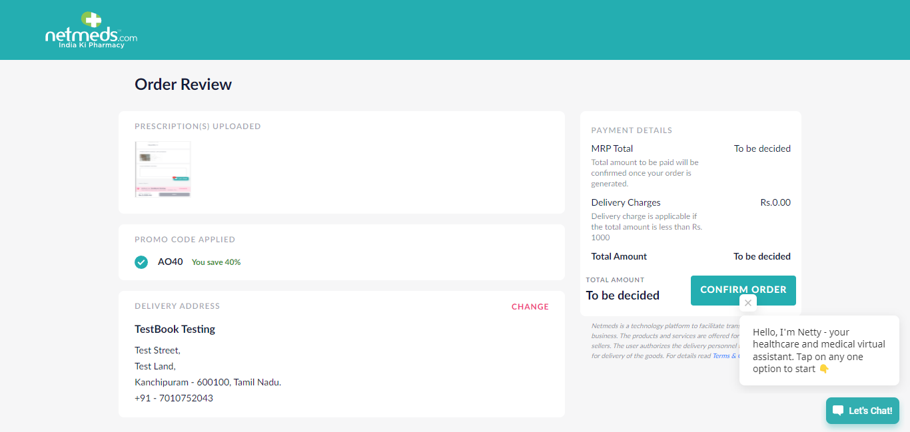
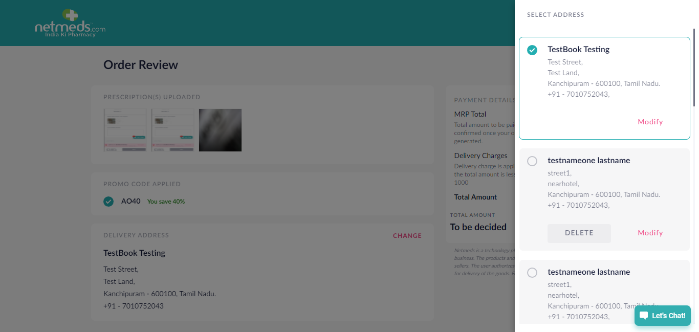

warning Status
- Pass check_circle <<<<<<< HEAD
- Fail cancel ======= >>>>>>> 4c84438d48ce55109dd9fe5f11d7fa4d78c1fdf8
- Clear Filters clear
Tests
<<<<<<< HEAD
0 test(s) passed
4 test(s) failed, 0 others
=======
4 test(s) passed
0 test(s) failed, 0 others
>>>>>>> 4c84438d48ce55109dd9fe5f11d7fa4d78c1fdf8
Steps
<<<<<<< HEAD
14 step(s) passed
12 step(s) failed, 0 others
=======
41 step(s) passed
0 step(s) failed, 0 others
>>>>>>> 4c84438d48ce55109dd9fe5f11d7fa4d78c1fdf8
Tests
-
<<<<<<< HEAD
-
M2 Get Call From netmeds - Upload Prescription Jul 6, 2021 04:17:00 PM failJul 6, 2021 04:17:00 PM Jul 6, 2021 04:17:42 PM 0h 0m 41s+626ms =======
Status Timestamp Details check_circle <<<<<<< HEAD4:17:00 PM =======10:21:24 AM >>>>>>> 4c84438d48ce55109dd9fe5f11d7fa4d78c1fdf8************* Get Call Flow******************** check_circle <<<<<<< HEAD4:17:23 PM =======10:21:45 AM >>>>>>> 4c84438d48ce55109dd9fe5f11d7fa4d78c1fdf8Successfully navigated to home page check_circle <<<<<<< HEAD4:17:31 PM Successfully navigated to Add Prescription page cancel 4:17:41 PM autoIt_Upload FAILED cancel 4:17:41 PM cancel 4:17:42 PM Snapshot below: com.aventstack.extentreports.ExtentTest@3081f72c =======10:21:53 AM Successfully navigated to Add Prescription page check_circle 10:22:06 AM Prescription Uploaded Sucessfully check_circle 10:22:15 AM Successfully Clicked on Search Medicines check_circle 10:22:24 AM Successfully Placed the Order check_circle 10:22:50 AM Successfully Order was Cancelled check_circle 10:22:50 AM autoIt_Upload PASSED >>>>>>> 4c84438d48ce55109dd9fe5f11d7fa4d78c1fdf8M2 Search and Add Medicine - Upload Prescription Jul 6, 2021 04:17:48 PM failJul 6, 2021 04:17:48 PM Jul 6, 2021 04:18:13 PM 0h 0m 25s+16ms =======Status Timestamp Details check_circle <<<<<<< HEAD4:17:48 PM =======10:22:53 AM >>>>>>> 4c84438d48ce55109dd9fe5f11d7fa4d78c1fdf8************* Get Call Flow******************** check_circle <<<<<<< HEAD4:17:54 PM =======10:22:58 AM >>>>>>> 4c84438d48ce55109dd9fe5f11d7fa4d78c1fdf8Successfully navigated to home page check_circle <<<<<<< HEAD4:18:02 PM Successfully navigated to Add Prescription page cancel 4:18:12 PM autoIt_Upload_SearchMedicine FAILED cancel 4:18:12 PM cancel 4:18:13 PM Snapshot below: com.aventstack.extentreports.ExtentTest@20f5281c =======10:23:05 AM Successfully navigated to Add Prescription page check_circle 10:23:19 AM Prescription Uploaded Sucessfully check_circle 10:23:27 AM Successfully Clicked on Search Medicines check_circle 10:23:32 AM Successfully navigated to Search Medicine Page check_circle 10:23:41 AM Successfully Product was searched and added to the cart check_circle 10:24:00 AM Successfully Placed the Order check_circle 10:24:26 AM Successfully Order was Cancelled check_circle 10:24:26 AM autoIt_Upload_SearchMedicine PASSED >>>>>>> 4c84438d48ce55109dd9fe5f11d7fa4d78c1fdf8- 
M2 Get Call From netmeds Past RX Jul 6, 2021 04:18:19 PM failJul 6, 2021 04:18:19 PM Jul 6, 2021 04:19:30 PM 0h 1m 11s+130ms =======<<<<<<< HEADStatus Timestamp Details check_circle <<<<<<< HEAD4:18:19 PM =======10:24:29 AM >>>>>>> 4c84438d48ce55109dd9fe5f11d7fa4d78c1fdf8************* Get Call Flow******************** check_circle <<<<<<< HEAD4:18:25 PM =======10:24:34 AM >>>>>>> 4c84438d48ce55109dd9fe5f11d7fa4d78c1fdf8Successfully navigated to home page check_circle <<<<<<< HEAD4:18:32 PM =======10:24:42 AM >>>>>>> 4c84438d48ce55109dd9fe5f11d7fa4d78c1fdf8Successfully navigated to Add Prescription page check_circle <<<<<<< HEAD4:18:42 PM =======10:24:51 AM >>>>>>> 4c84438d48ce55109dd9fe5f11d7fa4d78c1fdf8Added the Past RX Prescription check_circle <<<<<<< HEAD4:18:50 PM =======10:24:59 AM >>>>>>> 4c84438d48ce55109dd9fe5f11d7fa4d78c1fdf8Successfully Clicked on Search Medicines check_circle <<<<<<< HEAD4:18:53 PM =======10:25:02 AM >>>>>>> 4c84438d48ce55109dd9fe5f11d7fa4d78c1fdf8AO40 You save 40% check_circle <<<<<<< HEAD4:18:56 PM Successfully Clicked on Change Address cancel 4:19:30 PM m2_getCall FAILED cancel 4:19:30 PM cancel 4:19:30 PM Snapshot below: com.aventstack.extentreports.ExtentTest@20c0a64d =======10:25:08 AM Successfully Clicked on Change Address check_circle 10:25:40 AM Successfully Saved the New Address check_circle 10:26:12 AM Successfully Modified the Address check_circle 10:26:15 AM Successfully Deleted the Address check_circle 10:26:27 AM Successfully Placed the Order check_circle 10:26:53 AM Successfully Order was Cancelled check_circle 10:26:53 AM m2_getCall PASSED >>>>>>> 4c84438d48ce55109dd9fe5f11d7fa4d78c1fdf8- 
M2 Search and Add Medicine - Past RX Jul 6, 2021 04:19:36 PM failJul 6, 2021 04:19:36 PM Jul 6, 2021 04:19:40 PM 0h 0m 4s+492ms =======M2 Search and Add Medicine - Past RX Jul 7, 2021 10:26:56 AM passJul 7, 2021 10:26:56 AM Jul 7, 2021 10:28:25 AM 0h 1m 28s+879ms >>>>>>> 4c84438d48ce55109dd9fe5f11d7fa4d78c1fdf8<<<<<<< HEADStatus Timestamp Details check_circle <<<<<<< HEAD4:19:36 PM ************* Search Medicine Flow******************** cancel 4:19:40 PM m2_searchMedicine FAILED cancel 4:19:40 PM org.openqa.selenium.ElementNotVisibleException: element not interactable (Session info: chrome=91.0.4472.124) (Driver info: chromedriver=91.0.4472.101 (af52a90bf87030dd1523486a1cd3ae25c5d76c9b-refs/branch-heads/4472@{#1462}),platform=Windows NT 10.0.19041 x86_64) (WARNING: The server did not provide any stacktrace information) Command duration or timeout: 36 milliseconds Build info: version: '2.52.0', revision: '4c2593cfc3689a7fcd7be52549167e5ccc93ad28', time: '2016-02-11 11:22:43' System info: host: 'NMSLAP093', ip: '192.168.1.101', os.name: 'Windows 10', os.arch: 'amd64', os.version: '10.0', java.version: '1.8.0_221' Driver info: org.openqa.selenium.chrome.ChromeDriver Capabilities [{mobileEmulationEnabled=false, timeouts={implicit=0, pageLoad=300000, script=30000}, hasTouchScreen=false, platform=XP, acceptSslCerts=false, goog:chromeOptions={debuggerAddress=localhost:63761}, acceptInsecureCerts=false, webStorageEnabled=true, browserName=chrome, takesScreenshot=true, javascriptEnabled=true, setWindowRect=true, webauthn:extension:largeBlob=true, unexpectedAlertBehaviour=ignore, applicationCacheEnabled=false, rotatable=false, networkConnectionEnabled=false, chrome={chromedriverVersion=91.0.4472.101 (af52a90bf87030dd1523486a1cd3ae25c5d76c9b-refs/branch-heads/4472@{#1462}), userDataDir=C:\Users\Admin\AppData\Local\Temp\scoped_dir9544_1513986077}, takesHeapSnapshot=true, pageLoadStrategy=normal, strictFileInteractability=false, databaseEnabled=false, handlesAlerts=true, version=91.0.4472.124, browserConnectionEnabled=false, proxy={}, nativeEvents=true, locationContextEnabled=true, cssSelectorsEnabled=true, webauthn:virtualAuthenticators=true}] Session ID: 03629d9f071a2412563f5ac6f9778878 at sun.reflect.NativeConstructorAccessorImpl.newInstance0(Native Method) at sun.reflect.NativeConstructorAccessorImpl.newInstance(Unknown Source) at sun.reflect.DelegatingConstructorAccessorImpl.newInstance(Unknown Source) at java.lang.reflect.Constructor.newInstance(Unknown Source) at org.openqa.selenium.remote.ErrorHandler.createThrowable(ErrorHandler.java:206) at org.openqa.selenium.remote.ErrorHandler.throwIfResponseFailed(ErrorHandler.java:158) at org.openqa.selenium.remote.RemoteWebDriver.execute(RemoteWebDriver.java:678) at org.openqa.selenium.remote.RemoteWebElement.execute(RemoteWebElement.java:327) at org.openqa.selenium.remote.RemoteWebElement.click(RemoteWebElement.java:85) at sun.reflect.NativeMethodAccessorImpl.invoke0(Native Method) at sun.reflect.NativeMethodAccessorImpl.invoke(Unknown Source) at sun.reflect.DelegatingMethodAccessorImpl.invoke(Unknown Source) at java.lang.reflect.Method.invoke(Unknown Source) at org.openqa.selenium.support.pagefactory.internal.LocatingElementHandler.invoke(LocatingElementHandler.java:51) at com.sun.proxy.$Proxy9.click(Unknown Source) at com.Nm.Base.BaseClass.btncli(BaseClass.java:75) at com.Nm.Website.M2_Flow_Search.m2_searchMedicine(M2_Flow_Search.java:86) at sun.reflect.NativeMethodAccessorImpl.invoke0(Native Method) at sun.reflect.NativeMethodAccessorImpl.invoke(Unknown Source) at sun.reflect.DelegatingMethodAccessorImpl.invoke(Unknown Source) at java.lang.reflect.Method.invoke(Unknown Source) at org.testng.internal.MethodInvocationHelper.invokeMethod(MethodInvocationHelper.java:124) at org.testng.internal.Invoker.invokeMethod(Invoker.java:583) at org.testng.internal.Invoker.invokeTestMethod(Invoker.java:719) at org.testng.internal.Invoker.invokeTestMethods(Invoker.java:989) at org.testng.internal.TestMethodWorker.invokeTestMethods(TestMethodWorker.java:125) at org.testng.internal.TestMethodWorker.run(TestMethodWorker.java:109) at org.testng.TestRunner.privateRun(TestRunner.java:648) at org.testng.TestRunner.run(TestRunner.java:505) at org.testng.SuiteRunner.runTest(SuiteRunner.java:455) at org.testng.SuiteRunner.runSequentially(SuiteRunner.java:450) at org.testng.SuiteRunner.privateRun(SuiteRunner.java:415) at org.testng.SuiteRunner.run(SuiteRunner.java:364) at org.testng.SuiteRunnerWorker.runSuite(SuiteRunnerWorker.java:52) at org.testng.SuiteRunnerWorker.run(SuiteRunnerWorker.java:84) at org.testng.TestNG.runSuitesSequentially(TestNG.java:1208) at org.testng.TestNG.runSuitesLocally(TestNG.java:1137) at org.testng.TestNG.runSuites(TestNG.java:1049) at org.testng.TestNG.run(TestNG.java:1017) at org.testng.remote.AbstractRemoteTestNG.run(AbstractRemoteTestNG.java:114) at org.testng.remote.RemoteTestNG.initAndRun(RemoteTestNG.java:251) at org.testng.remote.RemoteTestNG.main(RemoteTestNG.java:77)cancel 4:19:40 PM Snapshot below: com.aventstack.extentreports.ExtentTest@59e505b2 =======10:26:56 AM ************* Search Medicine Flow******************** check_circle 10:27:01 AM Successfully navigated to home page check_circle 10:27:10 AM Successfully navigated to Add Prescription page check_circle 10:27:19 AM Added the Past RX Prescription check_circle 10:27:22 AM Successfully Clicked on Search Medicines check_circle 10:27:27 AM Successfully navigated to Search Medicine Page check_circle 10:27:40 AM Successfully Product was searched and added to the cart check_circle 10:27:59 AM Successfully Placed the Order check_circle 10:28:25 AM Successfully Order was Cancelled check_circle 10:28:25 AM m2_searchMedicine PASSED >>>>>>> 4c84438d48ce55109dd9fe5f11d7fa4d78c1fdf8info_outline check_circle cancel cancel error warning redo clear======= >>>>>>> 4c84438d48ce55109dd9fe5f11d7fa4d78c1fdf8Exceptions
-
java.io.IOException 2
Timestamp TestName Status Jul 6, 2021 04:17:00 PM M2 Get Call From netmeds - Upload Prescription Jul 6, 2021 04:17:48 PM M2 Search and Add Medicine - Upload Prescription -
org.openqa.selenium.WebDriverException 1
Timestamp TestName Status Jul 6, 2021 04:18:19 PM M2 Get Call From netmeds Past RX -
org.openqa.selenium.ElementNotVisibleException 1
Timestamp TestName Status Jul 6, 2021 04:19:36 PM M2 Search and Add Medicine - Past RX org.openqa.selenium.ElementNotVisibleException: element not interactable (Session info: chrome=91.0.4472.124) (Driver info: chromedriver=91.0.4472.101 (af52a90bf87030dd1523486a1cd3ae25c5d76c9b-refs/branch-heads/4472@{#1462}),platform=Windows NT 10.0.19041 x86_64) (WARNING: The server did not provide any stacktrace information) Command duration or timeout: 36 milliseconds Build info: version: '2.52.0', revision: '4c2593cfc3689a7fcd7be52549167e5ccc93ad28', time: '2016-02-11 11:22:43' System info: host: 'NMSLAP093', ip: '192.168.1.101', os.name: 'Windows 10', os.arch: 'amd64', os.version: '10.0', java.version: '1.8.0_221' Driver info: org.openqa.selenium.chrome.ChromeDriver Capabilities [{mobileEmulationEnabled=false, timeouts={implicit=0, pageLoad=300000, script=30000}, hasTouchScreen=false, platform=XP, acceptSslCerts=false, goog:chromeOptions={debuggerAddress=localhost:63761}, acceptInsecureCerts=false, webStorageEnabled=true, browserName=chrome, takesScreenshot=true, javascriptEnabled=true, setWindowRect=true, webauthn:extension:largeBlob=true, unexpectedAlertBehaviour=ignore, applicationCacheEnabled=false, rotatable=false, networkConnectionEnabled=false, chrome={chromedriverVersion=91.0.4472.101 (af52a90bf87030dd1523486a1cd3ae25c5d76c9b-refs/branch-heads/4472@{#1462}), userDataDir=C:\Users\Admin\AppData\Local\Temp\scoped_dir9544_1513986077}, takesHeapSnapshot=true, pageLoadStrategy=normal, strictFileInteractability=false, databaseEnabled=false, handlesAlerts=true, version=91.0.4472.124, browserConnectionEnabled=false, proxy={}, nativeEvents=true, locationContextEnabled=true, cssSelectorsEnabled=true, webauthn:virtualAuthenticators=true}] Session ID: 03629d9f071a2412563f5ac6f9778878 at sun.reflect.NativeConstructorAccessorImpl.newInstance0(Native Method) at sun.reflect.NativeConstructorAccessorImpl.newInstance(Unknown Source) at sun.reflect.DelegatingConstructorAccessorImpl.newInstance(Unknown Source) at java.lang.reflect.Constructor.newInstance(Unknown Source) at org.openqa.selenium.remote.ErrorHandler.createThrowable(ErrorHandler.java:206) at org.openqa.selenium.remote.ErrorHandler.throwIfResponseFailed(ErrorHandler.java:158) at org.openqa.selenium.remote.RemoteWebDriver.execute(RemoteWebDriver.java:678) at org.openqa.selenium.remote.RemoteWebElement.execute(RemoteWebElement.java:327) at org.openqa.selenium.remote.RemoteWebElement.click(RemoteWebElement.java:85) at sun.reflect.NativeMethodAccessorImpl.invoke0(Native Method) at sun.reflect.NativeMethodAccessorImpl.invoke(Unknown Source) at sun.reflect.DelegatingMethodAccessorImpl.invoke(Unknown Source) at java.lang.reflect.Method.invoke(Unknown Source) at org.openqa.selenium.support.pagefactory.internal.LocatingElementHandler.invoke(LocatingElementHandler.java:51) at com.sun.proxy.$Proxy9.click(Unknown Source) at com.Nm.Base.BaseClass.btncli(BaseClass.java:75) at com.Nm.Website.M2_Flow_Search.m2_searchMedicine(M2_Flow_Search.java:86) at sun.reflect.NativeMethodAccessorImpl.invoke0(Native Method) at sun.reflect.NativeMethodAccessorImpl.invoke(Unknown Source) at sun.reflect.DelegatingMethodAccessorImpl.invoke(Unknown Source) at java.lang.reflect.Method.invoke(Unknown Source) at org.testng.internal.MethodInvocationHelper.invokeMethod(MethodInvocationHelper.java:124) at org.testng.internal.Invoker.invokeMethod(Invoker.java:583) at org.testng.internal.Invoker.invokeTestMethod(Invoker.java:719) at org.testng.internal.Invoker.invokeTestMethods(Invoker.java:989) at org.testng.internal.TestMethodWorker.invokeTestMethods(TestMethodWorker.java:125) at org.testng.internal.TestMethodWorker.run(TestMethodWorker.java:109) at org.testng.TestRunner.privateRun(TestRunner.java:648) at org.testng.TestRunner.run(TestRunner.java:505) at org.testng.SuiteRunner.runTest(SuiteRunner.java:455) at org.testng.SuiteRunner.runSequentially(SuiteRunner.java:450) at org.testng.SuiteRunner.privateRun(SuiteRunner.java:415) at org.testng.SuiteRunner.run(SuiteRunner.java:364) at org.testng.SuiteRunnerWorker.runSuite(SuiteRunnerWorker.java:52) at org.testng.SuiteRunnerWorker.run(SuiteRunnerWorker.java:84) at org.testng.TestNG.runSuitesSequentially(TestNG.java:1208) at org.testng.TestNG.runSuitesLocally(TestNG.java:1137) at org.testng.TestNG.runSuites(TestNG.java:1049) at org.testng.TestNG.run(TestNG.java:1017) at org.testng.remote.AbstractRemoteTestNG.run(AbstractRemoteTestNG.java:114) at org.testng.remote.RemoteTestNG.initAndRun(RemoteTestNG.java:251) at org.testng.remote.RemoteTestNG.main(RemoteTestNG.java:77)
Dashboard
Tests4Steps <<<<<<< HEAD26=======41>>>>>>> 4c84438d48ce55109dd9fe5f11d7fa4d78c1fdf8Start <<<<<<< HEADJul 6, 2021 04:16:47 PM=======Jul 7, 2021 10:21:13 AM>>>>>>> 4c84438d48ce55109dd9fe5f11d7fa4d78c1fdf8End <<<<<<< HEADJul 6, 2021 04:19:46 PM=======Jul 7, 2021 10:28:28 AM>>>>>>> 4c84438d48ce55109dd9fe5f11d7fa4d78c1fdf8Time Taken <<<<<<< HEAD0h 2m 58s+972ms=======0h 7m 15s+67ms>>>>>>> 4c84438d48ce55109dd9fe5f11d7fa4d78c1fdf8EnvironmentName Value Host name localhost Environemnt QA user Automation Team